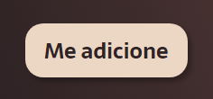
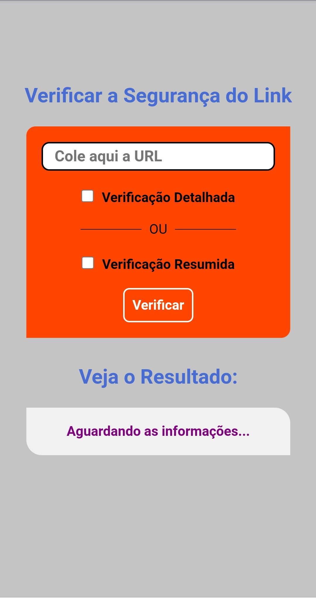
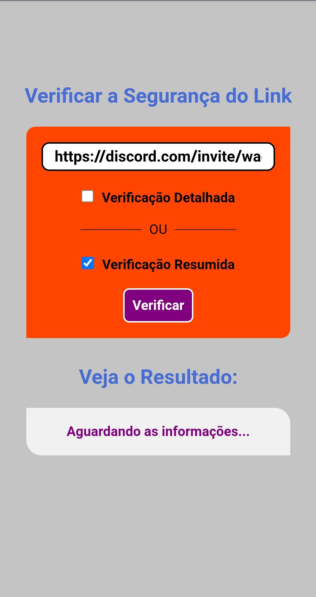
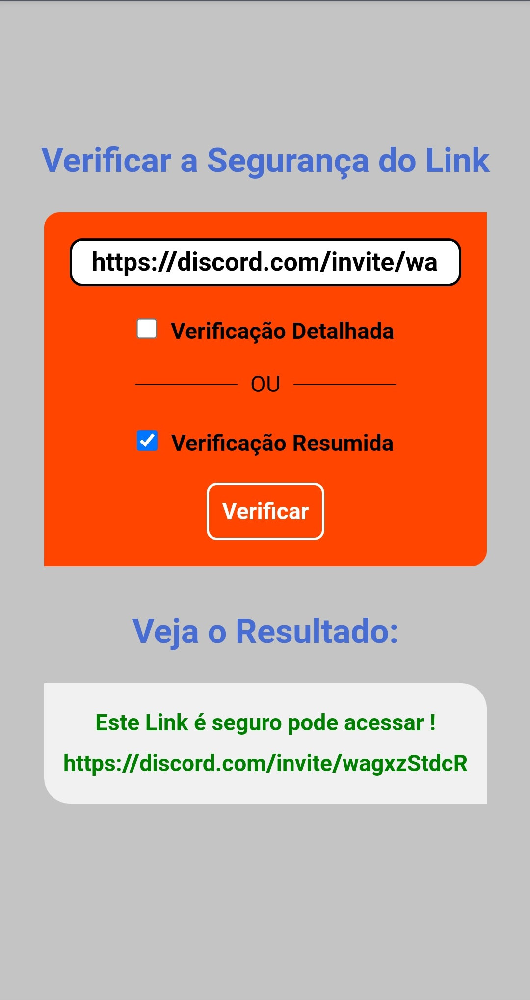
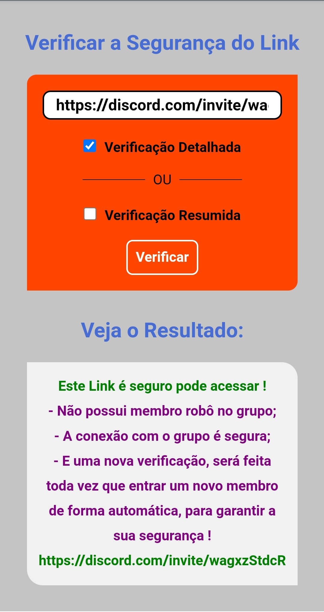

Tutorial
O primeiro passo que você deve seguir é: clique no botão " Me adicione ".

Em seguida, cole ou digite a URL, selecione o tipo de verificação e aperte em " Verificar ".


Se o resultado for positivo, será gerado o acesso ao link.
Após a verificação, basta clicar no link e pronto !


Caso, o resultado seja negativo, não será liberado o acesso ao link.
Na verificação detalhada serão revelados os motivos da reprovação do acesso.